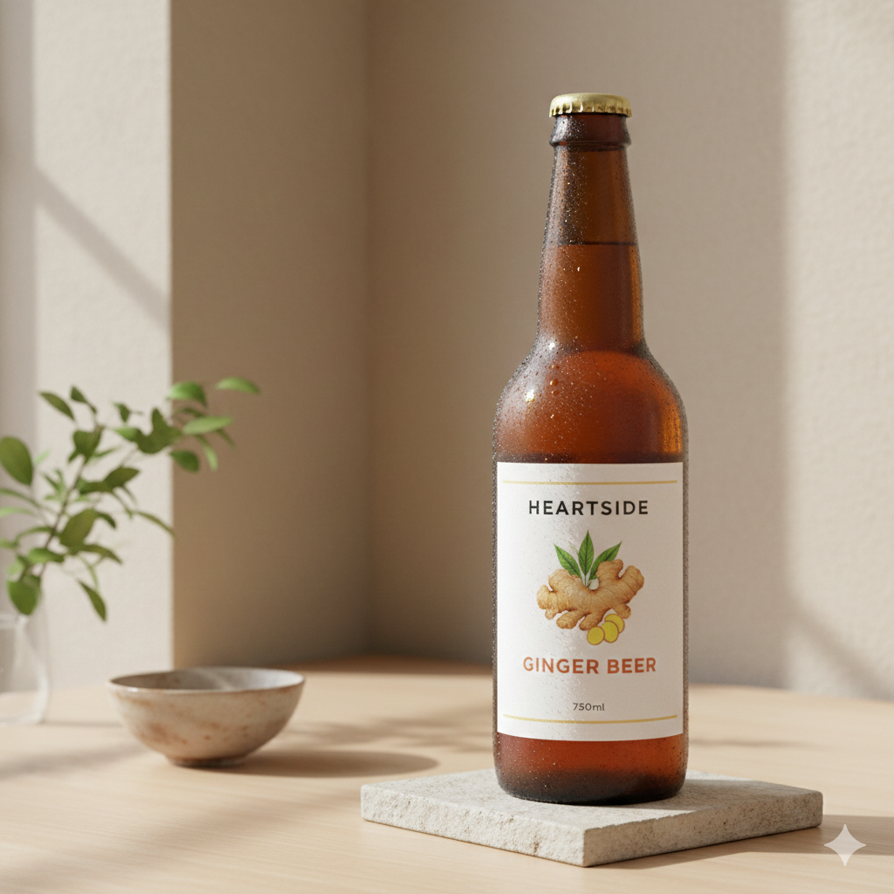

Tentang Bir Jahe
Salah satu jenis produk fermentasi yang diminati hingga saat ini adalah bir jahe. Bir jahe merupakan minuman non-alkohol yang memiliki rasa manis dan pedas serta berkarbonasi yang unik. Berawal dari Inggris, produk ini dibuat hanya dengan mencampurkan bahan seperti jahe, air gula dan lemon untuk berfermentasi. Hasilnya memberikan minuman manis dan pedas serta memiliki sifat berkarbonasi. Pada kalanya, minuman ini sangat diminati karena berbahan utama jahe yang banyak dijual pada perdanganan. Jahe sebagai bahan utama juga memberikan sifat hangat dan manfaat bagi tubuh. Walaupun nama minuman menggunakan istilah 'bir', minuman ini sedikit mengandung alkohol dengan kandungan sebesar 0.5% membuat minuman ini sebagai produk non-alkohol